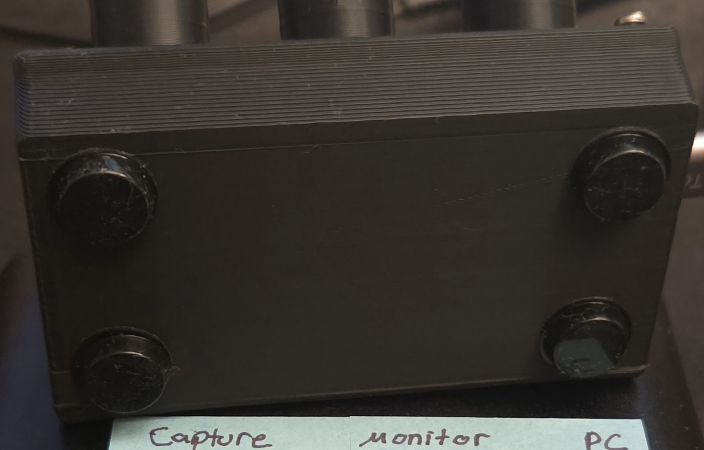
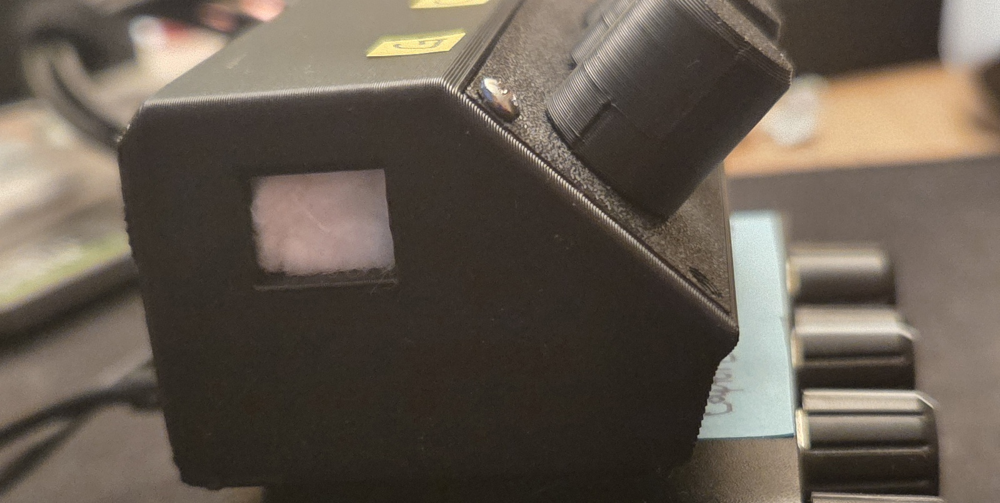

The Problem
When playing a game on my computer, I usually have discord open and music playing. If I'm mid-game and need to change the volume of a single channel, I need to tab out then find
the volume slider for that single app. And volume levels are rarely consistent.
A song might be louder than the one before, or the game might have a loud section for a few minutes. It gets annoying having to tab out and change the volume
levels between 3 seperate apps.
The Idea
A few months ago, I bought an audio mixer (shown above, with the blue sticky notes) that takes in 3 input streams and sends them out through a single output,
with a dials for each channel to lower or raise the volume. I use it all the time since my monitor doesn't have built-in speakers and I use multiple aux inputs (pc, console, capture card).
Previously, I used to switch the aux input between my monitor and PC. Not the worst thing but it was annoying
and it meant I couln't game on my consoles while talking on discord. The audio mixer fixed this.
I wanted this exact set up but for seperate apps instead of seperate aux inputs. Specifically, I want 3 knobs: One for the current game, one for discord, and the third for my music.
The Solution
While researching, I found a solution called
Deej that
promised to do exactly that. You provide a microcontroller with some code on it, and Deej reads that data and handles converting it to volume settings.
I orded these
HiLetgo 10K ohm potentiometers off of amazon and tried to solder them onto my raspberry pico. Turns out I'm trash
at soldering so I asked my friend to help me. I sent him the
schematic and which pins I needed
soldered to the data (ADC 0, ADC1, ADC2). We sent the pico and forth some 3 times due to mistakes or the solder breaking (maybe I shouldn't have forced it into the case). So,
for my sanity, I asked him to solder new potentionmeters while I was there so I could immediately test it. We got it working and I'm pretty happy with how it turned out.
Model Files + Notes
My 3D model based on
this model by Anefecious
Changes I made:
- Reduced knobs to three.
- Increased the height.
- Added a shelf inside the case for the pico to sit on.
- Increased the usb slot size and added another on the opposite side.
In last photo, you can see I added a cotton ball inside to keep the pico from sliding.
The case could be improved by adding a support wall for the pico to be pushed against when plugging in the charger.
I also added rubber pads to the bottom for added grip, and put sticky notes with letters for each knob: (g)ame, (c)hrome, (d)iscord.

